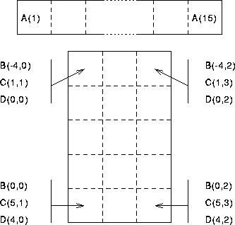

Next: Declarations
Up: Arrays
Previous: Arrays
Examples of declarations:
REAL, DIMENSION(15) :: A
REAL, DIMENSION(-4:0,0:2) :: B
REAL :: C(5,3), D(0:4,0:2) ! Shorthand
The above are explicit-shape arrays.
Terminology:
- rank -- the number of dimensions up to and including 7
dimensions. A has rank 1, B, C and D have rank 2.
- bounds -- upper and lower limits of indices, an unspecified
bound is 1. A has lower bound 1 and upper bound 15, B has
lower bounds -4 and 0 and upper bounds 0 and 2, C
has lower bounds of 1 and 1 with upper bounds 5 and 3, and D has
bounds 0 and 0, and 4 and 2.
- extent -- number of elements in dimension (which can be
zero). A has extent 15, B, C and D
have extents 5 and 3.
- size -- either the total number of elements or, if
particular dimension is specified, the number of elements in that
dimension. All arrays have size 15.
- shape -- rank and extents. A has shape
(/15/),
B, C and D have shape (/5,3/). - conformable -- two arrays are conformable if they have the
same shape -- for operations between two
arrays the shapes (of the sections) must (generally) conform (just like in
mathematics). B, C and D have the same shape so they conform.
- there is no storage association
 for Fortran 90 arrays.
for Fortran 90 arrays.
Explicit-shape arrays can have symbolic bounds so long as they are
initialisation expressions -- evaluatable at compile time.
Now try this question 
Consider the following declarations,
REAL, DIMENSION(15) :: A
REAL, DIMENSION(-4:0,0:2) :: B
REAL :: C(5,3), D(0:4,0:2) ! Shorthand
Individual array elements are denoted by subscripting the array
name by an INTEGER, for example, A(7) element of A, or
C(3,2), 3 elements down, 2 across.
The arrays can be visualised as below:

Figure 1: Visualisation of Arrays
The first dimension runs up and down the page and the second dimensions
runs across the page.
Next: Declarations
Up: Arrays
Previous: Arrays
Adam Marshall ©University of Liverpool, 1996
Tue Nov 26 17:50:42 GMT 1996